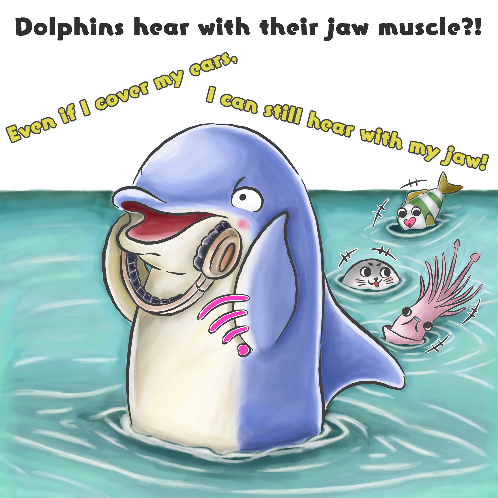

Dolphins hear with their jaws
DOI: 10.jjjjjj
Date: 2024-07-30

Dolphins Losses Ear Flaps
At one point, the ancestors of dolphins chose to live in the water. However, the ear flaps that got in the way of swimming disappeared.
Dolphins Stopped Chewing
Meanwhile, dolphins began swallowing their food whole, no longer using their strong jaw muscles.
Dolphin Jaw Muscles Turned Into Ears
The unused jaw muscles turned into fat, perfect for catching sounds underwater. This way, dolphins began to hear sounds with their jaw.
This illustration was created under the supervision of the researcher who conducted this study.
The original Article is here.